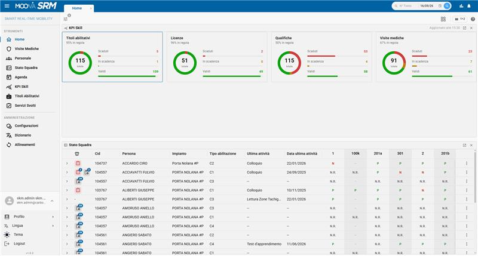

MOOVA SRM · Smart Real-Time Mobility
La piattaforma integrata per l'esercizio e le competenze.
SRM riunisce in un unico ecosistema il monitoraggio della circolazione, la gestione operativa del trasporto e il mantenimento delle competenze del personale. Multimodale, modulare e integrabile con i sistemi aziendali, supporta operatori, istruttori e amministratori nei processi quotidiani e nelle decisioni basate sui dati.


Perché SRM
Monitorare, gestire, qualificare — da un unico ecosistema
SRM coordina dati operativi e informazioni sul personale per offrire una visione completa del servizio: dalla posizione delle corse e dagli eventi di esercizio fino ad abilitazioni, visite mediche, valutazioni e continuità operativa. Dashboard, KPI e alert trasformano i dati in azioni tempestive e verificabili.
Strumenti di monitoraggio
Tutti i classici strumenti del monitoraggio — mappe, liste, viste linearizzate, schede di dettaglio, storico dei percorsi — per corse vestite e non.
Gestione operativa
Avvisi, allarmi e motivi di ritardo, scorte e spole, vestizione dei mezzi e del personale: la gestione operativa in un unico posto.
AI a supporto
Strumenti di intelligenza artificiale integrati a supporto del monitoraggio e della gestione operativa.
Configurabile
Home a widget personalizzabile, cataloghi, tipi di nota/avviso, ruoli e soglie gestiti a runtime. Dizionario multilingua integrato.
Leggera sull'hardware
Sviluppata per richiedere poche risorse hardware: può girare anche su cluster di piccole dimensioni.
Multimodale nativa
Focus spiccato sul monitoraggio multimodale, con algoritmi per il calcolo di coincidenze e corrispondenze e strumenti dedicati agli interscambi.
Ottimizzata per mobile
Interfaccia pienamente responsiva: la sala operativa e gli strumenti di monitoraggio funzionano perfettamente anche da smartphone e tablet.
App terra-bordo
Applicazione dedicata alla comunicazione terra-bordo, con interfacce già progettate — alcune già implementate — per il personale a bordo.
Ticketing e triage
Gli operatori aprono segnalazioni direttamente dallo strumento: ogni evento diventa un ticket tracciato. Un sistema di triage smista automaticamente le segnalazioni verso il canale di risoluzione corretto, accelerando la presa in carico.
I fondamenti
Costruita sugli standard e lavorando a stretto contatto con i clienti
Questi sono i fondamenti effettivi della piattaforma: non solo l'aderenza ai modelli dati del trasporto pubblico — che rende SRM interoperabile e a prova di futuro, evitando il lock-in — ma anche anni di esperienza sul campo con i clienti del settore, tradotta in funzionalità concrete e implementate.
Architettura
Architettura — scelte e valore per il business
SRM è un'applicazione a microservizi che unifica processi eterogenei — pianificazione, mappa real-time, equipaggi, controlli medici, reportistica, KPI, anagrafiche — in un unico frontend modulare.
Frontend modulare
Un modulo per processo, isolati tra loro: deploy indipendenti, blast radius contenuto, meno regressioni per rilascio.
React + TypeScript
Type-safety in fase di compilazione, tooling standard di settore, competenze reperibili sul mercato.
Design system + store centralizzato
Libreria di componenti condivisa e single source of truth dei dati: UX coerente, riuso, nessun disallineamento tra viste.
Backend disaccoppiato
Ogni servizio (veicoli, equipaggi, pianificazione, KPI, rete, AI) esposto tramite un contratto dedicato: le evoluzioni restano confinate all'interfaccia.
Multilingua + real-time + AI nativi
Multilingua, streaming di dati live e assistente AI integrati alla base, non aggiunti a posteriori.
CI con test automatici
Verifica continua ad ogni modifica: evoluzione del prodotto a basso rischio.
Responsive by design
Layout adattivo su tutte le viste: la stessa applicazione gira senza compromessi da desktop a mobile, senza codice duplicato.
Il prodotto
Uno sguardo dentro SRM
Esplora le funzionalità operative, gli strumenti di intelligenza artificiale e la gestione delle competenze per area. Apri una scheda per vedere immagini, video e dettagli.
Dove stiamo andando
La roadmap del percorso
Le fasi del progetto in colonna, collegate dalla dorsale. Clicca una fase per aprire o chiudere le sue attività; passa sopra una fermata per il dettaglio completo.
➜Apri la mappa della roadmapFasi e attività su una pagina dedicata, più leggibile da telefono.›